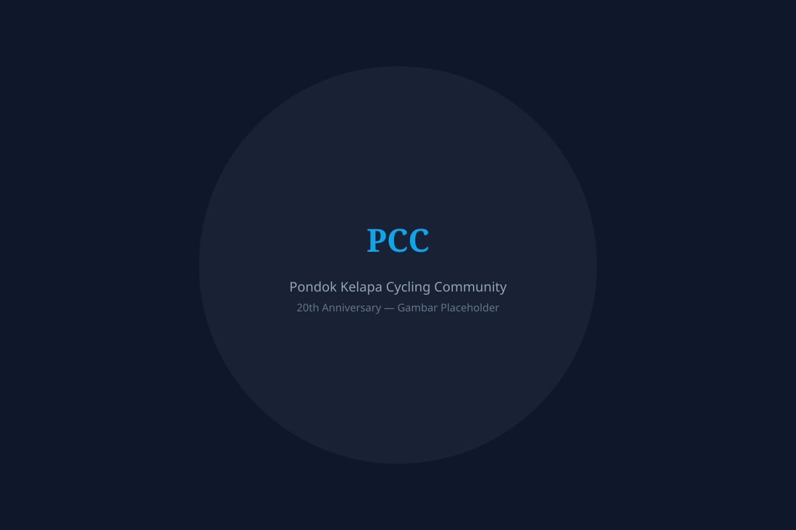

Menjemput dua dekade persahabatan, para jalanan, dan kenangan di atas sepeda.
Lihat Galeri Baca CeritaKomunitas sepeda yang lahir dari kebersamaan warga Pondok Kelapa. Sejak 2005, kami berkumpul setiap minggu untuk menjalani jalan, menjaga kesehatan, dan mempererat tali silaturahmi di antarasepedawan.

PCC bukan sekadar komunitas sepeda. Kami adalah keluarga yang saling peduli, menuntun pemula, dan menyambut setiap angotan dengan tangan terbuka. Dari pagi hari di lapangan hingga petang di atas jalan tol pantai, setiap pedalan adalah cerita.
Kisah para anggota PCC dari waktu ke waktu, dikumpulkan untuk dijadikan arsip komunitas.